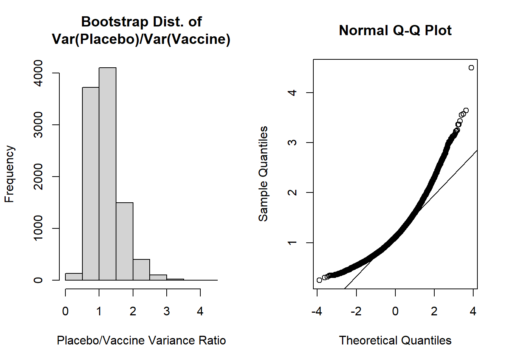
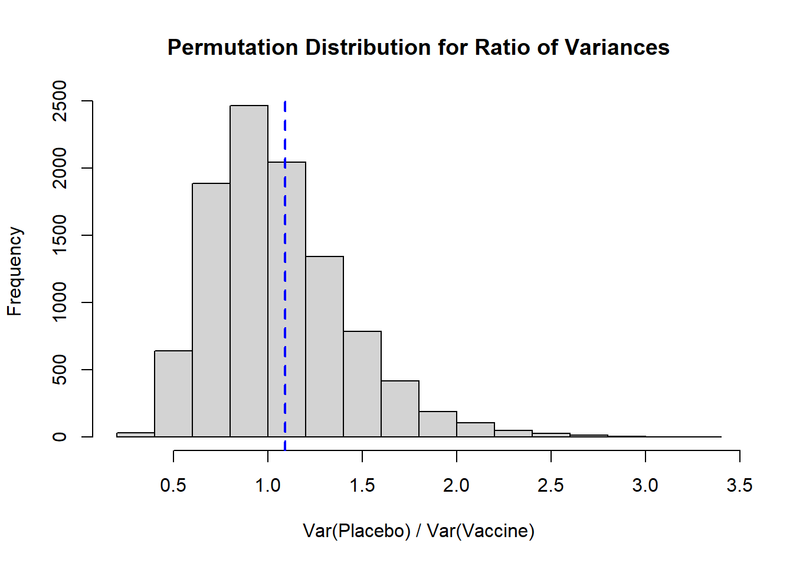
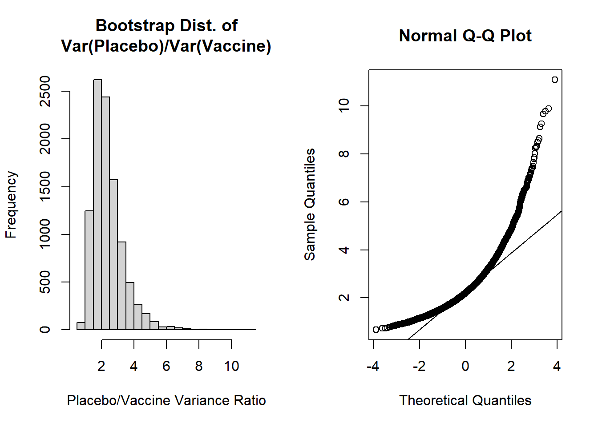
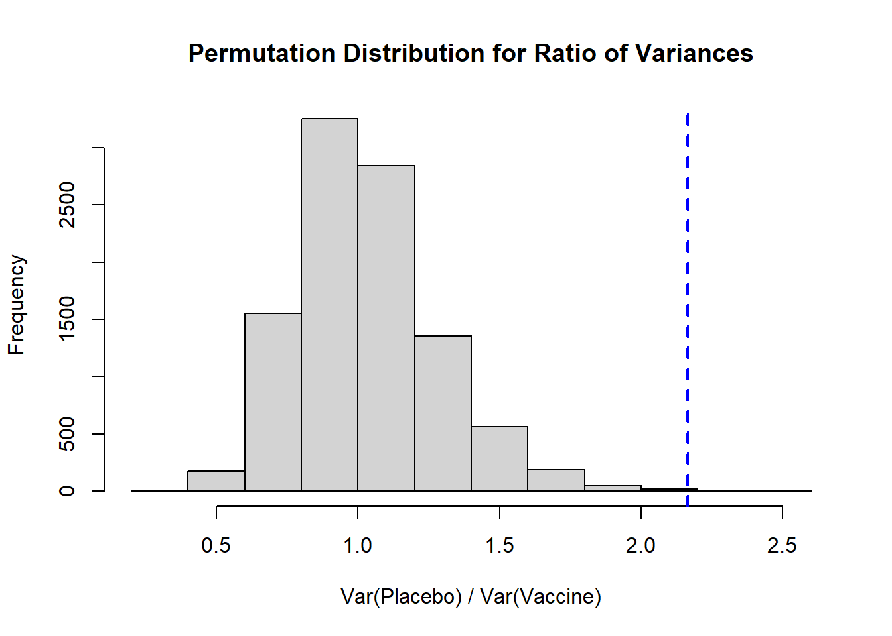
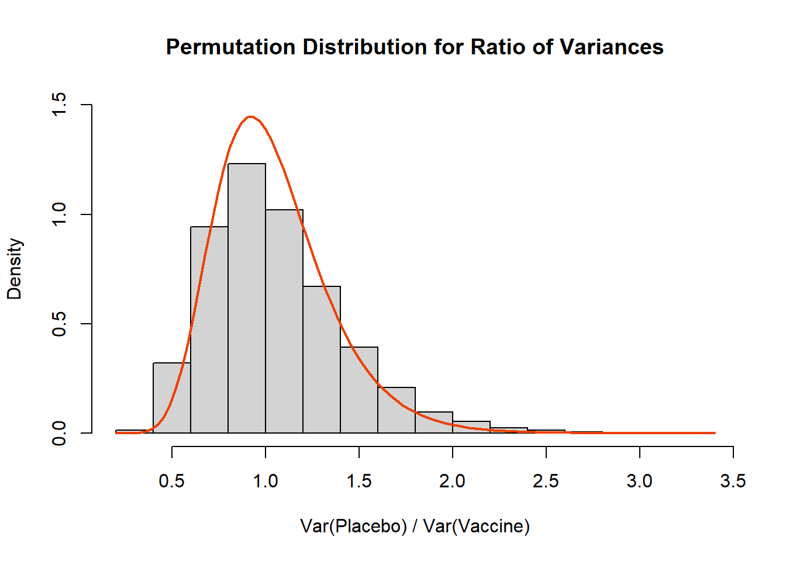

This page is part of the University of Colorado-Anschutz Medical Campus’ BIOS 6618 Labs collection, the mini-lecture content delivered at the start of class before breaking out into small groups to work on the homework assignment.
What’s on the docket this week?
In Week 6 we are focusing on additional examples of bootstraps and permutation tests. Another helpful visual explainer of permutation tests is about being an alpaca shepherd.
A Colorful Illustration of Bootstraps and Permutations
There are a lot of similarities in between bootstraps and permutations:
both involve resampling (with replacement for bootstraps, without replacement for permutations)
both provide a means for evaluating the potential significance of a statistic (interpreting the confidence interval for bootstraps, interpreting a p-value for permutations)
both can be thought of as nonparametric approaches (i.e., we don’t have to assume any underlying distribution to conduct a test)
However, the nuances of sampling and what our ultimate goal for conducting either approach make them inherently different methods. If we strongly desire a p-value, we would implement a permutation test. Likewise, if we really wanted an estimate of the variability around a given statistic (e.g., its standard error or confidence interval), we would implement a bootstrap.
These concepts can be challenging to “picture” when considering data cases. As a change of pace, let’s consider the “average” color of a given sample.
The Colorful Dataset
Let’s assume we have conducted a study with 6 observations in two groups, each represented by a color. Our “outcome” is the average color within the group (we can calculate this using the average_colors() function from the miscHelpers package that can be downloaded from GitHub):
Code
# Run this function to install the kableExtra package to create some tables#devtools::install_github("haozhu233/kableExtra")library(kableExtra)# Run this function to install the miscHelpers package to use the average_colors() function#remotes::install_github("BenaroyaResearch/miscHelpers")library(miscHelpers)# Create vectors to store colors ingrp1 <-c('#0072B2','#0072B2','#0072B2','#97C9E4','#97C9E4','#97C9E4') # vector with 2 bluesgrp2 <-c('#F0E442','#F0E442','#F0E442','#EA1F2F','#EA1F2F','#EA1F2F') # vector with reds and yellows# Create matrix for 1:6 (group 1) and A:F (group 2)grp_mat <-matrix( c(1:6,'Avg. 1','A','B','C','D','E','F','Avg. 2'), nrow=7, byrow=F, dimnames=list(c(paste0('Observation ',1:6),'Average'), c('Group 1','Group 2')))grp_mat %>%kbl(align='cc') %>%kable_paper(full_width = F) %>%column_spec(2, color ="black",background =c(grp1, average_colors(grp1))) %>%column_spec(3, color ="black",background =c(grp2, average_colors(grp2))) %>%row_spec(6, extra_css ="border-bottom: 2px solid")
Group 1
Group 2
Observation 1
1
A
Observation 2
2
B
Observation 3
3
C
Observation 4
4
D
Observation 5
5
E
Observation 6
6
F
Average
Avg. 1
Avg. 2
We can see in the above that the average color in Group 1 is a blue that is the “average” of the 3 light and 3 dark blues. For Group 2 the average of 3 yellows and 3 reds is orange.
Let’s first see an example of bootstrap resampling. Remember, here we sample within each group and with replacement:
Code
set.seed(515)grp1b <-sort(sample(1:6, size=6, replace=T))grp2b <-sort(sample(1:6, size=6, replace=T))grp_matb <-matrix( c((1:6)[grp1b],'Avg. Boot 1',c('A','B','C','D','E','F')[grp2b],'Avg. Boot 2'), nrow=7, byrow=F)colnames(grp_matb) <-c('Boot Group 1','Boot Group 2')grp_combo <-cbind(grp_mat, '', grp_matb)grp_combo %>%kbl(align='cc') %>%kable_paper(full_width = F) %>%column_spec(2, color ="black",background =c(grp1, average_colors(grp1))) %>%column_spec(3, color ="black",background =c(grp2, average_colors(grp2))) %>%column_spec(5, color ="black",background =c(grp1[grp1b], average_colors(grp1[grp1b]))) %>%column_spec(6, color ="black",background =c(grp2[grp2b], average_colors(grp2[grp2b]))) %>%row_spec(6, extra_css ="border-bottom: 2px solid")
Group 1
Group 2
Boot Group 1
Boot Group 2
Observation 1
1
A
1
A
Observation 2
2
B
2
A
Observation 3
3
C
3
B
Observation 4
4
D
4
B
Observation 5
5
E
4
C
Observation 6
6
F
6
C
Average
Avg. 1
Avg. 2
Avg. Boot 1
Avg. Boot 2
In this bootstrap, we see that Boot Group 1 has resampled the 4th observation twice, so the 5th “light blue” observation is not included in the sample. However, since both observation 4 and 5 are “light blue” the overall average color is unchanged!
In this bootstrap, we see that Boot Group 2 has resampled each “A”, “B”, and “C” twice…leaving no red observations! In this case the bootstrap distribution is only yellow observations (one potential extreme) and our average is simply yellow.
How does this differ from a permutation test? For the permutation test we combine all 12 observations before resampling without replacement as to who belongs to which group:
Code
set.seed(1012)grp_perm <-sort(sample(1:12, size=6, replace=F)) # sample 6 observations to go into group 1, the rest will go into group 2grp1p <-c(1:6,'A','B','C','D','E','F')[grp_perm] # take values according to index sampled for grp_permgrp2p <-c(1:6,'A','B','C','D','E','F')[-grp_perm] # remove values according to index sampled from grp_permgrp1p_col <-c(grp1,grp2)[grp_perm]grp2p_col <-c(grp1,grp2)[-grp_perm]grp_matp <-matrix( c(grp1p,'Avg. Perm 1',grp2p,'Avg. Perm 2'), nrow=7, byrow=F)colnames(grp_matp) <-c('Perm Group 1','Perm Group 2')grp_combo2 <-cbind(grp_combo, '', grp_matp)grp_combo2 %>%kbl(align='cc') %>%kable_paper(full_width = F) %>%column_spec(2, color ="black",background =c(grp1, average_colors(grp1))) %>%column_spec(3, color ="black",background =c(grp2, average_colors(grp2))) %>%column_spec(5, color ="black",background =c(grp1[grp1b], average_colors(grp1[grp1b]))) %>%column_spec(6, color ="black",background =c(grp2[grp2b], average_colors(grp2[grp2b]))) %>%column_spec(8, color ="black",background =c(grp1p_col, average_colors(grp1p_col))) %>%column_spec(9, color ="black",background =c(grp2p_col, average_colors(grp2p_col))) %>%row_spec(6, extra_css ="border-bottom: 2px solid")
Group 1
Group 2
Boot Group 1
Boot Group 2
Perm Group 1
Perm Group 2
Observation 1
1
A
1
A
1
2
Observation 2
2
B
2
A
3
4
Observation 3
3
C
3
B
A
5
Observation 4
4
D
4
B
C
6
Observation 5
5
E
4
C
E
B
Observation 6
6
F
6
C
F
D
Average
Avg. 1
Avg. 2
Avg. Boot 1
Avg. Boot 2
Avg. Perm 1
Avg. Perm 2
In our permutation sample we see that group membership has been broken, so that members of the original Group 1 and Group 2 are now part of the Perm Group 1 and Perm Group 2. This process helps us to break any potential association that may have existed previously (e.g., only blues in one group versus red and yellows in another).
We see our average colors are now an interesting brownish (Avg. Perm 1) and grayish-blue (Avg. Perm 2).
If our original observation (e.g., the difference in sample means between groups) was actually from the null distribution, then we would expect that estimate to fall near the center of our permutation distribution. In our color example, the original colors are decided in our two camps (blue vs. red/yellow), so here we see a muddier picture of the average color.
Based on either approach, we would want to conduct a large number of bootstrap or permutation resamples, and then examine the overall distribution:
Code
bp_mat <-matrix('', ncol=5,nrow=100)colnames(bp_mat) <-c('Boot Group 1','Boot Group 2','','Perm Group 1','Perm Group 2')rownames(bp_mat) <-paste0('Simulation ',1:100)for(j in1:100){set.seed(2020+j)# permutation resample grp_perm <-sample(1:12, size=6, replace=F) # sample 6 observations to go into group 1, the rest will go into group 2 bp_mat[j,'Perm Group 1'] <-average_colors(c(grp1,grp2)[grp_perm]) bp_mat[j,'Perm Group 2'] <-average_colors(c(grp1,grp2)[-grp_perm])# bootstrap resample bp_mat[j,'Boot Group 1'] <-average_colors( grp1[ sample(1:6,size=6,replace=T) ]) bp_mat[j,'Boot Group 2'] <-average_colors( grp2[ sample(1:6,size=6,replace=T) ])}# Object to create kable frombp_mat_kableshell <-matrix('', ncol=5,nrow=100)colnames(bp_mat_kableshell) <-c('Boot Group 1','Boot Group 2','','Perm Group 1','Perm Group 2')rownames(bp_mat_kableshell) <-paste0('Simulation ',1:100)bp_mat_kableshell %>%kbl() %>%kable_paper(full_width = F) %>%column_spec(2, color ="black",background = bp_mat[,'Boot Group 1']) %>%column_spec(3, color ="black",background = bp_mat[,'Boot Group 2']) %>%column_spec(5, color ="black",background = bp_mat[,'Perm Group 1']) %>%column_spec(6, color ="black",background = bp_mat[,'Perm Group 2'])
Boot Group 1
Boot Group 2
Perm Group 1
Perm Group 2
Simulation 1
Simulation 2
Simulation 3
Simulation 4
Simulation 5
Simulation 6
Simulation 7
Simulation 8
Simulation 9
Simulation 10
Simulation 11
Simulation 12
Simulation 13
Simulation 14
Simulation 15
Simulation 16
Simulation 17
Simulation 18
Simulation 19
Simulation 20
Simulation 21
Simulation 22
Simulation 23
Simulation 24
Simulation 25
Simulation 26
Simulation 27
Simulation 28
Simulation 29
Simulation 30
Simulation 31
Simulation 32
Simulation 33
Simulation 34
Simulation 35
Simulation 36
Simulation 37
Simulation 38
Simulation 39
Simulation 40
Simulation 41
Simulation 42
Simulation 43
Simulation 44
Simulation 45
Simulation 46
Simulation 47
Simulation 48
Simulation 49
Simulation 50
Simulation 51
Simulation 52
Simulation 53
Simulation 54
Simulation 55
Simulation 56
Simulation 57
Simulation 58
Simulation 59
Simulation 60
Simulation 61
Simulation 62
Simulation 63
Simulation 64
Simulation 65
Simulation 66
Simulation 67
Simulation 68
Simulation 69
Simulation 70
Simulation 71
Simulation 72
Simulation 73
Simulation 74
Simulation 75
Simulation 76
Simulation 77
Simulation 78
Simulation 79
Simulation 80
Simulation 81
Simulation 82
Simulation 83
Simulation 84
Simulation 85
Simulation 86
Simulation 87
Simulation 88
Simulation 89
Simulation 90
Simulation 91
Simulation 92
Simulation 93
Simulation 94
Simulation 95
Simulation 96
Simulation 97
Simulation 98
Simulation 99
Simulation 100
If this were an actual study with a numeric outcome we could describe the variability of our average color within or between groups (bootstrap sampling) or we could calculate if our observed data is more extreme than the null/permutation distribution (permutation test).
Indeed we can see that for all 100 bootstrap samples, there are various shades of blue for Group 1 and red/orange/yellow for Group 2. Whereas for all 100 permutation samples there is a range of colors from purpleish to blueish to orangeish to greenish…a random combination of our colors!
Bootstrap and Permutation Test Example: The Ratio of Sample Variances
Assume we have conducted a randomized trial that enrolled 100 total participants with celiac disease to examine the potential effect of a new vaccine (\(T\)) to desensitize the immune system in its reaction to gluten as compared to a placebo (\(P\)). The outcome is the measure of the tissue transglutaminase IgA antibody (tTG-IgA).
As a secondary analysis of the primary trial, we wish to explore if the variability of tTG-IgA in the two groups with 50 participants each are approximately equal, even if their mean tTG-IgA concentrations are different. To evaluate this, we propose using the ratio of the placebo to the treatment group: [ ] If the ratio is equal to 1, our estimates are the same (i.e., our null hypothesis). Let’s assume that we have zero idea what distribution this may take, so we want to explore using bootstraps to describe the variability or a permutation test to calculate a p-value summary if our sample is unexpected.
Null Scenario
Let’s start with the null scenario, where both groups have the same variance. We will simulate from: [ Y_{P} (=10, =3), ; Y_{T} (=5, =) ] These parameters were chosen so that both sets of data will have a variance of 90 (i.e., the variance for the gamma distribution when parameterized with the shape (\(k\)) and scale (\(\theta\)) is \(k\theta^2\)).
obs_ratio <-var(placebo)/var(vaccine) # calculate the ratio of the variancesobs_ratio
[1] 1.090336
Null Scenario: Bootstrap
Let’s conduct a bootstrap with 10,000 resamples of our ratio of the sample variances to describe the variability of this statistic:
Code
B <-10^4#set number of bootstrapsvar_ratio <-numeric(B) #initialize vector to store results innP <-length(placebo) #sample size of placebo groupnT <-length(vaccine) #sample size of vaccine groupset.seed(612) #set seed for reproducibilityfor (i in1:B){ placebo.boot <-sample(placebo, nP, replace=T) vaccine.boot <-sample(vaccine, nT, replace=T) var_ratio[i] <-var(placebo.boot) /var(vaccine.boot)}
Let’s now visualize the shape of our bootstrap distribution:
Code
par(mfrow=c(1,2)) #create plotting area for 2 figures in one rowhist(var_ratio, main='Bootstrap Dist. of\nVar(Placebo)/Var(Vaccine)', xlab='Placebo/Vaccine Variance Ratio')qqnorm(var_ratio); qqline(var_ratio)

The shapes of these plots suggest the ratio of variances is not normally distributed. Our histogram is right skewed and the normal Q-Q plot deviates from the diagonal line.
Let’s then calculate the mean, SE, and bias of the bootstrap distribution:
Code
mean(var_ratio) # bootstrap mean ratio
[1] 1.185681
Code
mean(var_ratio)-obs_ratio # bias for ratio
[1] 0.09534477
Code
sd(var_ratio) # bootstrap SE
[1] 0.4441747
Code
(mean(var_ratio)-obs_ratio) /sd(var_ratio) # estimate of accuracy
[1] 0.214656
The most concerning aspect of this is the bias/SE estimate > 0.10, suggesting our bootstrap percentile intervals may not be very accurate. However, let’s calculate the 95% bootstrap percentile interval as our “best” approach given the two options from our lecture (i.e., normal percentile or bootstrap percentile):
Code
quantile( var_ratio, c(0.025,0.975))
2.5% 97.5%
0.5456348 2.2689698
For the 95% bootstrap percentile CI, we are 95% confident that the true ratio of variances falls between 0.546 and 2.269. Additionally, because it is estimated from our data directly, 95% of the bootstrap estimates of ratios of variances fall in this interval.
The accuracy of our bootstrap percentile can be estimated by the ratio of the bias/SE, which we noted was 0.215. Since this exceeds +0.10 we may be concerned about the accuracy of this estimate.
It could also be noted that our 95% bootstrap percentile CI includes 1, so we would fail to reject the null hypothesis.
Null Scenario: Permutation Test
Perhaps we are more interested in calculating a p-value to determine if the sample ratio differs from its underlying null distribution:
Code
B <-10^4-1#set number of times to complete permutation samplingresult <-numeric(B)nP <-length(placebo)obs_ratio <-var(placebo)/var(vaccine) # calculate the ratio of the variancesset.seed(612) #set seed for reproducibilitypool_dat <-c(placebo, vaccine)for(j in1:B){ index <-sample(x=1:length(pool_dat), size=nP, replace=F) placebo_permute <- pool_dat[index] vaccine_permute <- pool_dat[-index] result[j] <-var(placebo_permute) /var(vaccine_permute)}# Histogramhist( result, xlab='Var(Placebo) / Var(Vaccine)', main='Permutation Distribution for Ratio of Variances')abline( v=obs_ratio, lty=2, col='blue', lwd=2)

Again, we see a distribution that is right skewed, and our observed ratio of variances falls fairly close to our expected null of 1. To calculate a two-sided p-value we would take the larger of the proportion of our distribution that falls above our observed ratio or, in our context, the proportion that falls below 1/obs_ratio (the inverse of our observed ratio), and multiply it by 2:
Code
#note, we take the larger p-value and multiply by 2 (as compared to replacing <= with >)((sum(result >= obs_ratio) +1)/(B+1))
It is helpful to plot the permutation distribution to note what direction (\(\leq\) vs. \(\geq\)) we need to use in our calculation.
We multiple the larger p-value by 2 to (1) account for the two-sided test and (2) to be more conservative (vs. using the smaller proportion).
If we wanted to calculate a one-sided p-value we would need to define that null and alternative hypothesis. For example, if our \(H_0\) is that the ratio of variances is larger than 1 (i.e., the placebo group has larger variance), we would specifically interpret our result as \(p=0.3992\). If the null hypothesis is that the ratio of variance is smaller than 1, based on our observed ratio we would have \(1-0.3992=0.6008\).
Alternative Scenario
Let’s check an alternative scenario, where we will simulate from: [ Y_{P} (=10, =3), ; Y_{T} (=5, =3) ] These parameters were chosen so that the placebo has a true variance of 90 and the vaccine has a true variance of 45 (i.e., the variance for the gamma distribution when parameterized with the shape (\(k\)) and scale (\(\theta\)) is \(k\theta^2\)).
obs_ratio <-var(placebo)/var(vaccine) # calculate the ratio of the variancesobs_ratio
[1] 2.163655
Alternative Scenario: Bootstrap
Let’s conduct a bootstrap with 10,000 resamples of our ratio of the sample variances to describe the variability of this statistic:
Code
B <-10^4#set number of bootstrapsvar_ratio <-numeric(B) #initialize vector to store results innP <-length(placebo) #sample size of placebo groupnT <-length(vaccine) #sample size of vaccine groupset.seed(312) #set seed for reproducibilityfor (i in1:B){ placebo.boot <-sample(placebo, nP, replace=T) vaccine.boot <-sample(vaccine, nT, replace=T) var_ratio[i] <-var(placebo.boot) /var(vaccine.boot)}
Let’s now visualize the shape of our bootstrap distribution:
Code
par(mfrow=c(1,2)) #create plotting area for 2 figures in one rowhist(var_ratio, main='Bootstrap Dist. of\nVar(Placebo)/Var(Vaccine)', xlab='Placebo/Vaccine Variance Ratio')qqnorm(var_ratio); qqline(var_ratio)

The shapes of these plots suggest the ratio of variances is not normally distributed. Our histogram is right skewed and the normal Q-Q plot deviates from the diagonal line.
Let’s then calculate the mean, SE, and bias of the bootstrap distribution:
Code
mean(var_ratio) # bootstrap mean ratio
[1] 2.398181
Code
mean(var_ratio)-obs_ratio # bias for ratio
[1] 0.2345258
Code
sd(var_ratio) # bootstrap SE
[1] 0.9640094
Code
(mean(var_ratio)-obs_ratio) /sd(var_ratio) # estimate of accuracy
[1] 0.2432816
The most concerning aspect of this is the bias/SE estimate > 0.10, suggesting our bootstrap percentile intervals may not be very accurate. However, let’s calculate the 95% bootstrap percentile interval as our “best” approach given the two options from our lecture (i.e., normal percentile or bootstrap percentile):
Code
quantile( var_ratio, c(0.025,0.975))
2.5% 97.5%
1.150953 4.786700
For the 95% bootstrap percentile CI, we are 95% confident that the true ratio of variances falls between 1.151 and 4.787. Additionally, because it is estimated from our data directly, 95% of the bootstrap estimates of ratios of variances fall in this interval.
The accuracy of our bootstrap percentile can be estimated by the ratio of the bias/SE, which we noted was 0.243. Since this exceeds +0.10 we may be concerned about the accuracy of this estimate.
It could also be noted that our 95% bootstrap percentile CI excludes 1, so we may conclude that we would reject the null hypothesis, and conclude our ratio of sample variances are not equal. Further, given the ratio as placebo/vaccine, we could conclude that the placebo has greater variability.
Alternative Scenario: Permutation Test
Perhaps we are more interested in calculating a p-value to determine if the sample ratio differs from its underlying null distribution:
Code
B <-10^4-1#set number of times to complete permutation samplingresult <-numeric(B)nP <-length(placebo)obs_ratio <-var(placebo)/var(vaccine) # calculate the ratio of the variancesset.seed(312) #set seed for reproducibilitypool_dat <-c(placebo, vaccine)for(j in1:B){ index <-sample(x=1:length(pool_dat), size=nP, replace=F) placebo_permute <- pool_dat[index] vaccine_permute <- pool_dat[-index] result[j] <-var(placebo_permute) /var(vaccine_permute)}# Histogramhist( result, xlab='Var(Placebo) / Var(Vaccine)', main='Permutation Distribution for Ratio of Variances')abline( v=obs_ratio, lty=2, col='blue', lwd=2)

Again, we see a distribution that is right skewed, and our observed ratio of variances falls fairly close to our expected null of 1. To calculate a two-sided p-value we would take the larger of the proportion of our distribution that falls above our observed ratio or, in our context, the proportion that falls below 1/obs_ratio (the inverse of our observed ratio), and multiply it by 2:
Code
#note, we take the larger p-value and multiply by 2 (as compared to replacing <= with >)((sum(result >= obs_ratio) +1)/(B+1))
Here we see that our two-sided p-value is 0.0016, so we would reject the null hypothesis that the variances are equal for placebo and vaccine groups.
A few important notes here:
It is helpful to plot the permutation distribution to note what direction (\(\leq\) vs. \(\geq\)) we need to use in our calculation.
If we wanted to calculate a one-sided p-value we would need to define that null and alternative hypothesis. For example, if our \(H_0\) is that the placebo has a larger variance than the vaccine group, we would conclude that the placebo group does appear to have a larger variance based on our one-sided \(p=0.0006\).
If the null hypothesis is that the vaccine has a larger variance than the placebo (i.e., the ratio is <1), based on our observed ratio we would have \(p=1-0.0006=0.9994\), or we would fail to reject that null hypothesis. In other words, we cannot conclude that the vaccine group has a larger variance than the placebo.
Wait a Minute, What is the Distribution of the Ratio of Variances??
Ahh, we almost snuck away without addressing the theoretical distribution! Generally speaking the ratio of variances will follow an \(F_{n_1-1,n_2-1}\) distribution under the null hypothesis that the variances are equal:
Code
set.seed(612)placebo <-rgamma(n=50, shape=10, scale=3)vaccine <-rgamma(n=50, shape=5, scale=sqrt(18))B <-10^4-1#set number of times to complete permutation samplingresult <-numeric(B)nP <-length(placebo)obs_ratio <-var(placebo)/var(vaccine) # calculate the ratio of the variancesset.seed(612) #set seed for reproducibilitypool_dat <-c(placebo, vaccine)for(j in1:B){ index <-sample(x=1:length(pool_dat), size=nP, replace=F) placebo_permute <- pool_dat[index] vaccine_permute <- pool_dat[-index] result[j] <-var(placebo_permute) /var(vaccine_permute)}# Histogramhist( result, xlab='Var(Placebo) / Var(Vaccine)', main='Permutation Distribution for Ratio of Variances', freq=F, ylim=c(0,1.5))curve(df(x,df1=49,df2=49),add=T, lwd=2, col='orangered2')

Source Code
---title: "Week 6 Lab"author: name: Alex Kaizer roles: "Instructor" affiliation: University of Colorado-Anschutz Medical Campustoc: truetoc_float: truetoc-location: leftformat: html: code-fold: show code-overflow: wrap code-tools: true---```{r, echo=F, message=F, warning=F}library(kableExtra)library(dplyr)```This page is part of the University of Colorado-Anschutz Medical Campus' [BIOS 6618 Labs](/labs/index.qmd) collection, the mini-lecture content delivered at the start of class before breaking out into small groups to work on the homework assignment.# What's on the docket this week?In Week 6 we are focusing on additional examples of bootstraps and permutation tests. Another helpful visual explainer of permutation tests is [about being an alpaca shepherd](https://www.jwilber.me/permutationtest/).# A Colorful Illustration of Bootstraps and PermutationsThere are a lot of similarities in between bootstraps and permutations:* both involve resampling (with replacement for bootstraps, without replacement for permutations)* both provide a means for evaluating the potential significance of a statistic (interpreting the confidence interval for bootstraps, interpreting a p-value for permutations)* both can be thought of as nonparametric approaches (i.e., we don't have to assume any underlying distribution to conduct a test)However, the nuances of sampling and what our ultimate goal for conducting either approach make them inherently different methods. If we strongly desire a p-value, we would implement a permutation test. Likewise, if we really wanted an estimate of the variability around a given statistic (e.g., its standard error or confidence interval), we would implement a bootstrap. These concepts can be challenging to "picture" when considering data cases. As a change of pace, let's consider the "average" color of a given sample.## The Colorful DatasetLet's assume we have conducted a study with 6 observations in two groups, each represented by a color. Our "outcome" is the average color within the group (we can calculate this using the `average_colors()` function from the `miscHelpers` package that can be downloaded from GitHub):```{r, class.source = 'fold-hide', message=F}#| code-fold: true# Run this function to install the kableExtra package to create some tables#devtools::install_github("haozhu233/kableExtra")library(kableExtra)# Run this function to install the miscHelpers package to use the average_colors() function#remotes::install_github("BenaroyaResearch/miscHelpers")library(miscHelpers)# Create vectors to store colors ingrp1 <-c('#0072B2','#0072B2','#0072B2','#97C9E4','#97C9E4','#97C9E4') # vector with 2 bluesgrp2 <-c('#F0E442','#F0E442','#F0E442','#EA1F2F','#EA1F2F','#EA1F2F') # vector with reds and yellows# Create matrix for 1:6 (group 1) and A:F (group 2)grp_mat <-matrix( c(1:6,'Avg. 1','A','B','C','D','E','F','Avg. 2'), nrow=7, byrow=F, dimnames=list(c(paste0('Observation ',1:6),'Average'), c('Group 1','Group 2')))grp_mat %>%kbl(align='cc') %>%kable_paper(full_width = F) %>%column_spec(2, color ="black",background =c(grp1, average_colors(grp1))) %>%column_spec(3, color ="black",background =c(grp2, average_colors(grp2))) %>%row_spec(6, extra_css ="border-bottom: 2px solid")```We can see in the above that the average color in Group 1 is a blue that is the "average" of the 3 light and 3 dark blues. For Group 2 the average of 3 yellows and 3 reds is orange.Let's first see an example of bootstrap resampling. Remember, here we sample *within* each group and *with replacement*:```{r, class.source = 'fold-hide'}#| code-fold: trueset.seed(515)grp1b <-sort(sample(1:6, size=6, replace=T))grp2b <-sort(sample(1:6, size=6, replace=T))grp_matb <-matrix( c((1:6)[grp1b],'Avg. Boot 1',c('A','B','C','D','E','F')[grp2b],'Avg. Boot 2'), nrow=7, byrow=F)colnames(grp_matb) <-c('Boot Group 1','Boot Group 2')grp_combo <-cbind(grp_mat, '', grp_matb)grp_combo %>%kbl(align='cc') %>%kable_paper(full_width = F) %>%column_spec(2, color ="black",background =c(grp1, average_colors(grp1))) %>%column_spec(3, color ="black",background =c(grp2, average_colors(grp2))) %>%column_spec(5, color ="black",background =c(grp1[grp1b], average_colors(grp1[grp1b]))) %>%column_spec(6, color ="black",background =c(grp2[grp2b], average_colors(grp2[grp2b]))) %>%row_spec(6, extra_css ="border-bottom: 2px solid")```* In this bootstrap, we see that Boot Group 1 has resampled the 4th observation twice, so the 5th "light blue" observation is not included in the sample. However, since both observation 4 and 5 are "light blue" the overall average color is unchanged!* In this bootstrap, we see that Boot Group 2 has resampled each "A", "B", and "C" twice...leaving no red observations! In this case the bootstrap distribution is only yellow observations (one potential extreme) and our average is simply yellow.**How does this differ from a permutation test?** For the permutation test we combine all 12 observations before resampling *without replacement* as to who belongs to which group:```{r, class.source = 'fold-hide'}#| code-fold: trueset.seed(1012)grp_perm <-sort(sample(1:12, size=6, replace=F)) # sample 6 observations to go into group 1, the rest will go into group 2grp1p <-c(1:6,'A','B','C','D','E','F')[grp_perm] # take values according to index sampled for grp_permgrp2p <-c(1:6,'A','B','C','D','E','F')[-grp_perm] # remove values according to index sampled from grp_permgrp1p_col <-c(grp1,grp2)[grp_perm]grp2p_col <-c(grp1,grp2)[-grp_perm]grp_matp <-matrix( c(grp1p,'Avg. Perm 1',grp2p,'Avg. Perm 2'), nrow=7, byrow=F)colnames(grp_matp) <-c('Perm Group 1','Perm Group 2')grp_combo2 <-cbind(grp_combo, '', grp_matp)grp_combo2 %>%kbl(align='cc') %>%kable_paper(full_width = F) %>%column_spec(2, color ="black",background =c(grp1, average_colors(grp1))) %>%column_spec(3, color ="black",background =c(grp2, average_colors(grp2))) %>%column_spec(5, color ="black",background =c(grp1[grp1b], average_colors(grp1[grp1b]))) %>%column_spec(6, color ="black",background =c(grp2[grp2b], average_colors(grp2[grp2b]))) %>%column_spec(8, color ="black",background =c(grp1p_col, average_colors(grp1p_col))) %>%column_spec(9, color ="black",background =c(grp2p_col, average_colors(grp2p_col))) %>%row_spec(6, extra_css ="border-bottom: 2px solid")```* In our permutation sample we see that group membership has been broken, so that members of the original Group 1 and Group 2 are now part of the Perm Group 1 and Perm Group 2. This process helps us to break any potential association that may have existed previously (e.g., only blues in one group versus red and yellows in another).* We see our average colors are now an interesting brownish (Avg. Perm 1) and grayish-blue (Avg. Perm 2).* If our original observation (e.g., the difference in sample means between groups) was actually from the *null distribution*, then we would expect that estimate to fall near the center of our permutation distribution. In our color example, the original colors are decided in our two camps (blue vs. red/yellow), so here we see a muddier picture of the average color.Based on either approach, we would want to conduct a large number of bootstrap or permutation resamples, and then examine the overall distribution:```{r, class.source = 'fold-hide'}#| code-fold: truebp_mat <-matrix('', ncol=5,nrow=100)colnames(bp_mat) <-c('Boot Group 1','Boot Group 2','','Perm Group 1','Perm Group 2')rownames(bp_mat) <-paste0('Simulation ',1:100)for(j in1:100){set.seed(2020+j)# permutation resample grp_perm <-sample(1:12, size=6, replace=F) # sample 6 observations to go into group 1, the rest will go into group 2 bp_mat[j,'Perm Group 1'] <-average_colors(c(grp1,grp2)[grp_perm]) bp_mat[j,'Perm Group 2'] <-average_colors(c(grp1,grp2)[-grp_perm])# bootstrap resample bp_mat[j,'Boot Group 1'] <-average_colors( grp1[ sample(1:6,size=6,replace=T) ]) bp_mat[j,'Boot Group 2'] <-average_colors( grp2[ sample(1:6,size=6,replace=T) ])}# Object to create kable frombp_mat_kableshell <-matrix('', ncol=5,nrow=100)colnames(bp_mat_kableshell) <-c('Boot Group 1','Boot Group 2','','Perm Group 1','Perm Group 2')rownames(bp_mat_kableshell) <-paste0('Simulation ',1:100)bp_mat_kableshell %>%kbl() %>%kable_paper(full_width = F) %>%column_spec(2, color ="black",background = bp_mat[,'Boot Group 1']) %>%column_spec(3, color ="black",background = bp_mat[,'Boot Group 2']) %>%column_spec(5, color ="black",background = bp_mat[,'Perm Group 1']) %>%column_spec(6, color ="black",background = bp_mat[,'Perm Group 2'])```If this were an actual study with a numeric outcome we could describe the variability of our average color within or between groups (**bootstrap sampling**) or we could calculate if our observed data is more extreme than the null/permutation distribution (**permutation test**).Indeed we can see that for all 100 bootstrap samples, there are various shades of blue for Group 1 and red/orange/yellow for Group 2. Whereas for all 100 permutation samples there is a range of colors from purpleish to blueish to orangeish to greenish...a random combination of our colors!# Bootstrap and Permutation Test Example: The Ratio of Sample VariancesAssume we have conducted a randomized trial that enrolled 100 total participants with celiac disease to examine the potential effect of a new vaccine ($T$) to desensitize the immune system in its reaction to gluten as compared to a placebo ($P$). The outcome is the measure of the tissue transglutaminase IgA antibody (tTG-IgA).As a secondary analysis of the primary trial, we wish to explore if the variability of tTG-IgA in the two groups with 50 participants each are approximately equal, even if their mean tTG-IgA concentrations are different. To evaluate this, we propose using the ratio of the placebo to the treatment group: \[ \frac{s_{P}^2}{s_{T}^2} \]If the ratio is equal to 1, our estimates are the same (i.e., our null hypothesis). Let's assume that we have zero idea what distribution this may take, so we want to explore using bootstraps to describe the variability or a permutation test to calculate a p-value summary if our sample is unexpected.## Null ScenarioLet's start with the null scenario, where both groups have the same variance. We will simulate from:\[ Y_{P} \sim \text{Gamma}(\text{shape}=10, \text{scale}=3), \; Y_{T} \sim \text{Gamma}(\text{shape}=5, \text{scale}=\sqrt{18}) \]These parameters were chosen so that both sets of data will have a variance of 90 (i.e., the variance for the gamma distribution when parameterized with the shape ($k$) and scale ($\theta$) is $k\theta^2$).```{r, class.source = 'fold-show'}set.seed(612)placebo <-rgamma(n=50, shape=10, scale=3)vaccine <-rgamma(n=50, shape=5, scale=sqrt(18))var(placebo) # calculate the sample variancesvar(vaccine) # calculate the sample variancesobs_ratio <-var(placebo)/var(vaccine) # calculate the ratio of the variancesobs_ratio```## **Null Scenario: Bootstrap**Let's conduct a bootstrap with 10,000 resamples of our ratio of the sample variances to describe the variability of this statistic:```{r, class.source = 'fold-show'}B <-10^4#set number of bootstrapsvar_ratio <-numeric(B) #initialize vector to store results innP <-length(placebo) #sample size of placebo groupnT <-length(vaccine) #sample size of vaccine groupset.seed(612) #set seed for reproducibilityfor (i in1:B){ placebo.boot <-sample(placebo, nP, replace=T) vaccine.boot <-sample(vaccine, nT, replace=T) var_ratio[i] <-var(placebo.boot) /var(vaccine.boot)}```Let's now visualize the shape of our bootstrap distribution:```{r, class.source = 'fold-show'}par(mfrow=c(1,2)) #create plotting area for 2 figures in one rowhist(var_ratio, main='Bootstrap Dist. of\nVar(Placebo)/Var(Vaccine)', xlab='Placebo/Vaccine Variance Ratio')qqnorm(var_ratio); qqline(var_ratio)```The shapes of these plots suggest the ratio of variances is not normally distributed. Our histogram is right skewed and the normal Q-Q plot deviates from the diagonal line.Let's then calculate the mean, SE, and bias of the bootstrap distribution:```{r, class.source = 'fold-show'}mean(var_ratio) # bootstrap mean ratiomean(var_ratio)-obs_ratio # bias for ratiosd(var_ratio) # bootstrap SE(mean(var_ratio)-obs_ratio) /sd(var_ratio) # estimate of accuracy```The most concerning aspect of this is the bias/SE estimate > 0.10, suggesting our bootstrap percentile intervals may not be very accurate. However, let's calculate the 95% bootstrap percentile interval as our "best" approach given the two options from our lecture (i.e., normal percentile or bootstrap percentile):```{r, class.source = 'fold-show'}quantile( var_ratio, c(0.025,0.975))```For the 95% bootstrap percentile CI, we are 95% confident that the true ratio of variances falls between 0.546 and 2.269. Additionally, because it is estimated from our data directly, 95% of the bootstrap estimates of ratios of variances fall in this interval. The accuracy of our bootstrap percentile can be estimated by the ratio of the bias/SE, which we noted was 0.215. Since this exceeds +0.10 we may be concerned about the accuracy of this estimate.It could also be noted that our 95% bootstrap percentile CI includes 1, so we would fail to reject the null hypothesis.## **Null Scenario: Permutation Test**Perhaps we are more interested in calculating a p-value to determine if the sample ratio differs from its underlying null distribution:```{r, class.source = 'fold-show'}B <-10^4-1#set number of times to complete permutation samplingresult <-numeric(B)nP <-length(placebo)obs_ratio <-var(placebo)/var(vaccine) # calculate the ratio of the variancesset.seed(612) #set seed for reproducibilitypool_dat <-c(placebo, vaccine)for(j in1:B){ index <-sample(x=1:length(pool_dat), size=nP, replace=F) placebo_permute <- pool_dat[index] vaccine_permute <- pool_dat[-index] result[j] <-var(placebo_permute) /var(vaccine_permute)}# Histogramhist( result, xlab='Var(Placebo) / Var(Vaccine)', main='Permutation Distribution for Ratio of Variances')abline( v=obs_ratio, lty=2, col='blue', lwd=2)```Again, we see a distribution that is right skewed, and our observed ratio of variances falls fairly close to our expected null of 1. To calculate a **two-sided p-value** we would take the larger of the proportion of our distribution that falls above our observed ratio or, in our context, the proportion that falls below `1/obs_ratio` (the inverse of our observed ratio), and multiply it by 2:```{r, class.source = 'fold-show'}#note, we take the larger p-value and multiply by 2 (as compared to replacing <= with >)((sum(result >= obs_ratio) +1)/(B+1))((sum(result <= (1/obs_ratio)) +1)/(B+1))# Calculate permutation p-value for two-sided test2* ((sum(result <= (1/obs_ratio)) +1)/(B+1)) ```Here we see that our two-sided p-value is 0.8018.A few important notes here:* It is helpful to plot the permutation distribution to note what direction ($\leq$ vs. $\geq$) we need to use in our calculation.* We multiple the larger p-value by 2 to (1) account for the two-sided test and (2) to be more conservative (vs. using the smaller proportion).* If we wanted to calculate a **one-sided p-value** we would need to define that null and alternative hypothesis. For example, if our $H_0$ is that the ratio of variances is larger than 1 (i.e., the placebo group has larger variance), we would specifically interpret our result as $p=0.3992$. If the null hypothesis is that the ratio of variance is smaller than 1, based on our observed ratio we would have $1-0.3992=0.6008$.## Alternative ScenarioLet's check an alternative scenario, where we will simulate from:\[ Y_{P} \sim \text{Gamma}(\text{shape}=10, \text{scale}=3), \; Y_{T} \sim \text{Gamma}(\text{shape}=5, \text{scale}=3) \]These parameters were chosen so that the placebo has a true variance of 90 and the vaccine has a true variance of 45 (i.e., the variance for the gamma distribution when parameterized with the shape ($k$) and scale ($\theta$) is $k\theta^2$).```{r, class.source = 'fold-show'}set.seed(312)placebo <-rgamma(n=50, shape=10, scale=3)vaccine <-rgamma(n=50, shape=5, scale=3)var(placebo) # calculate the sample variancesvar(vaccine) # calculate the sample variancesobs_ratio <-var(placebo)/var(vaccine) # calculate the ratio of the variancesobs_ratio```## **Alternative Scenario: Bootstrap**Let's conduct a bootstrap with 10,000 resamples of our ratio of the sample variances to describe the variability of this statistic:```{r, class.source = 'fold-show'}B <-10^4#set number of bootstrapsvar_ratio <-numeric(B) #initialize vector to store results innP <-length(placebo) #sample size of placebo groupnT <-length(vaccine) #sample size of vaccine groupset.seed(312) #set seed for reproducibilityfor (i in1:B){ placebo.boot <-sample(placebo, nP, replace=T) vaccine.boot <-sample(vaccine, nT, replace=T) var_ratio[i] <-var(placebo.boot) /var(vaccine.boot)}```Let's now visualize the shape of our bootstrap distribution:```{r, class.source = 'fold-show'}par(mfrow=c(1,2)) #create plotting area for 2 figures in one rowhist(var_ratio, main='Bootstrap Dist. of\nVar(Placebo)/Var(Vaccine)', xlab='Placebo/Vaccine Variance Ratio')qqnorm(var_ratio); qqline(var_ratio)```The shapes of these plots suggest the ratio of variances is not normally distributed. Our histogram is right skewed and the normal Q-Q plot deviates from the diagonal line.Let's then calculate the mean, SE, and bias of the bootstrap distribution:```{r, class.source = 'fold-show'}mean(var_ratio) # bootstrap mean ratiomean(var_ratio)-obs_ratio # bias for ratiosd(var_ratio) # bootstrap SE(mean(var_ratio)-obs_ratio) /sd(var_ratio) # estimate of accuracy```The most concerning aspect of this is the bias/SE estimate > 0.10, suggesting our bootstrap percentile intervals may not be very accurate. However, let's calculate the 95% bootstrap percentile interval as our "best" approach given the two options from our lecture (i.e., normal percentile or bootstrap percentile):```{r, class.source = 'fold-show'}quantile( var_ratio, c(0.025,0.975))```For the 95% bootstrap percentile CI, we are 95% confident that the true ratio of variances falls between 1.151 and 4.787. Additionally, because it is estimated from our data directly, 95% of the bootstrap estimates of ratios of variances fall in this interval. The accuracy of our bootstrap percentile can be estimated by the ratio of the bias/SE, which we noted was 0.243. Since this exceeds +0.10 we may be concerned about the accuracy of this estimate.It could also be noted that our 95% bootstrap percentile CI excludes 1, so we may conclude that we would reject the null hypothesis, and conclude our ratio of sample variances are not equal. Further, given the ratio as placebo/vaccine, we could conclude that the placebo has greater variability.## **Alternative Scenario: Permutation Test**Perhaps we are more interested in calculating a p-value to determine if the sample ratio differs from its underlying null distribution:```{r, class.source = 'fold-show'}B <-10^4-1#set number of times to complete permutation samplingresult <-numeric(B)nP <-length(placebo)obs_ratio <-var(placebo)/var(vaccine) # calculate the ratio of the variancesset.seed(312) #set seed for reproducibilitypool_dat <-c(placebo, vaccine)for(j in1:B){ index <-sample(x=1:length(pool_dat), size=nP, replace=F) placebo_permute <- pool_dat[index] vaccine_permute <- pool_dat[-index] result[j] <-var(placebo_permute) /var(vaccine_permute)}# Histogramhist( result, xlab='Var(Placebo) / Var(Vaccine)', main='Permutation Distribution for Ratio of Variances')abline( v=obs_ratio, lty=2, col='blue', lwd=2)```Again, we see a distribution that is right skewed, and our observed ratio of variances falls fairly close to our expected null of 1. To calculate a **two-sided p-value** we would take the larger of the proportion of our distribution that falls above our observed ratio or, in our context, the proportion that falls below `1/obs_ratio` (the inverse of our observed ratio), and multiply it by 2:```{r, class.source = 'fold-show'}#note, we take the larger p-value and multiply by 2 (as compared to replacing <= with >)((sum(result >= obs_ratio) +1)/(B+1))((sum(result <= (1/obs_ratio)) +1)/(B+1))# Calculate permutation p-value for two-sided test2* ((sum(result <= (1/obs_ratio)) +1)/(B+1)) ```Here we see that our two-sided p-value is 0.0016, so we would reject the null hypothesis that the variances are equal for placebo and vaccine groups.A few important notes here:* It is helpful to plot the permutation distribution to note what direction ($\leq$ vs. $\geq$) we need to use in our calculation.* If we wanted to calculate a **one-sided p-value** we would need to define that null and alternative hypothesis. For example, if our $H_0$ is that the placebo has a larger variance than the vaccine group, we would conclude that the placebo group does appear to have a larger variance based on our one-sided $p=0.0006$. * If the null hypothesis is that the vaccine has a larger variance than the placebo (i.e., the ratio is <1), based on our observed ratio we would have $p=1-0.0006=0.9994$, or we would fail to reject that null hypothesis. In other words, we cannot conclude that the vaccine group has a larger variance than the placebo.## Wait a Minute, What is the Distribution of the Ratio of Variances??Ahh, we almost snuck away without addressing the theoretical distribution! Generally speaking the ratio of variances will follow an $F_{n_1-1,n_2-1}$ distribution under the null hypothesis that the variances are equal:```{r, class.source = 'fold-hide'}#| code-fold: trueset.seed(612)placebo <-rgamma(n=50, shape=10, scale=3)vaccine <-rgamma(n=50, shape=5, scale=sqrt(18))B <-10^4-1#set number of times to complete permutation samplingresult <-numeric(B)nP <-length(placebo)obs_ratio <-var(placebo)/var(vaccine) # calculate the ratio of the variancesset.seed(612) #set seed for reproducibilitypool_dat <-c(placebo, vaccine)for(j in1:B){ index <-sample(x=1:length(pool_dat), size=nP, replace=F) placebo_permute <- pool_dat[index] vaccine_permute <- pool_dat[-index] result[j] <-var(placebo_permute) /var(vaccine_permute)}# Histogramhist( result, xlab='Var(Placebo) / Var(Vaccine)', main='Permutation Distribution for Ratio of Variances', freq=F, ylim=c(0,1.5))curve(df(x,df1=49,df2=49),add=T, lwd=2, col='orangered2')```